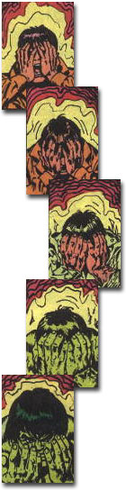

|
|
Information About the
This page shows the profile of the mightiest mortal to ever walk the Earth, the strongest one there is, the one who usually wants to be left alone: the Incredible Hulk.
Strength LevelThe Hulk possesses superhuman strength of the Class 100 level, enabling him to lift (press) in excess of 100 tons. The Hulk only attains this strength level when he is enraged. In a totally, calm state his functional strength is significantly less, perhaps in the 70 ton range. In human form Bruce Banner possesses the normal human strength of a man of his age, height, and build who engages in no regular exercise. Known Superhuman PowersThe Hulk possesses the capacity for nearly limitless physical strength, making him perhaps the strongest mortal being to ever walk the Earth. The gamma radiation that mutated the Hulk's body fortified his cellular structure and added, from some as yet unknown source, over 800 pounds of bone marrow and tissue to his body.  The mutation is not a stable one, and what causes it or the outcome of it differs with time. When Hulk reverts to the human form of Bruce Banner, he loses the extra mass and energy to the same as yet unknown source from which he derived it. At the time of the initial mutation, nightfall appeared to trigger the transformation into the Hulk. Later, a machine that projected a measured dose of gamma rays triggered the change. Then, the transformation into the Hulk was determined by Banner's emotional state. That has been the most common cause to trigger the change. Later, Banner was able to trigger the change at will, and control the Hulk's form. But this eventually cause the Hulk persona to totally take control. Later, Dr. Leonard Samson was able to separate the Hulk and Banner into two discrete beings. But this separation proved almost fatal so Samson merged them again. Banner started to revert at nightfall to the Gray Hulk. Then, through psychoanalysis, Samson seemed to "merge" Banner, the Green Hulk, and the Gray Hulk into one persona known as the Professor. Then it was revealed that this incarnation was one of many Hulk personas that live in Banner's psyche. Bruce Banner now dominates the Hulk persona, having the Hulk's might in his human appearance. But the transformation factors and outcomes will surely keep on... changing. The process by which Banner transforms into the Hulk has a chemical catalyst, adrenaline. As in normal humans, Banner's adrenal medulla secrets large amounts of adrenaline in times of fear, range, or stress, which hormonally stimulates the heartbeat rate, raises blood-sugar levels, and inhibits sensations of fatigue. Whereas this secretion simply heightens normal physical abilities in normal human beings, in Banner's case it triggers the complex chemical/extra-physical process that transforms him into the Hulk. The total transformation took from 25 seconds to as long as 5 minutes, depending on the initial adrenaline surge which is determined by the original, external stimulus. Soon after the transformation, the amount of adrenaline in the Hulk would return to more normal, reduced levels. In times of stress the Hulk's adrenaline level escalates, causing a corresponding escalation in strength. This is not accompanied by an additional gain in mass, but does appear to promote increased levels of energy efficiency. To date the Hulk has never apparently been provoked into demonstrating a maximum output of strength; hence, its upper limit remains a mystery. In addition to great strength, the Hulk's body possesses a high degree of resistance to injury, pain, and disease. The Hulk's skin is capable of withstanding great heat without blistering (up to 3,000° Fahrenheit), great cold without freezing (down to -190° F), and great impacts (he can survive direct hits by field artillery cannon shells). It is possible to injure him: he could not, for example, survive a near-hit with a nuclear warhead. The Hulk's highly efficient physiology renders him immune to all terrestrial disease. The Hulk can use his superhumanly strong leg muscles to leap great distances. The Hulk has been known to cover 3 miles in a single bound. The Hulk has two powers apparently not related to his physical attributes, he can see astral forms, and he has a homing ability that enables him to locate the area in New Mexico where he first became the Hulk. The nature of the first ability is not yet known, but the nature of the second one is due to being called by the remains of the Maestro, a future version of the Hulk, who died in ground zero when the G-Bomb that originated the Hulk, was detonated.
AbilitiesDr. Bruce Banner is a genius in nuclear physics. On the other hand, Hulk's intelligence level depends upon the incarnation. For example, the Savage Hulk (Green Hulk), has low intelligence, comparable to that of a small child, although he has an undeniable cunning that aids him in battle. The Professor (Merged Hulk) has the same intelligence level as Bruce Banner. The Gray Hulk is pretty smart, but is not a genius like Banner. Note: Banner's consciousness always influences the Hulk's form. Even when the Banner persona was suppressed by the Hulk's form (Mindless Hulk), although in that case, to a very limited extent.
RETURN TO THE HULK'S INTRODUCTION PAGE
|